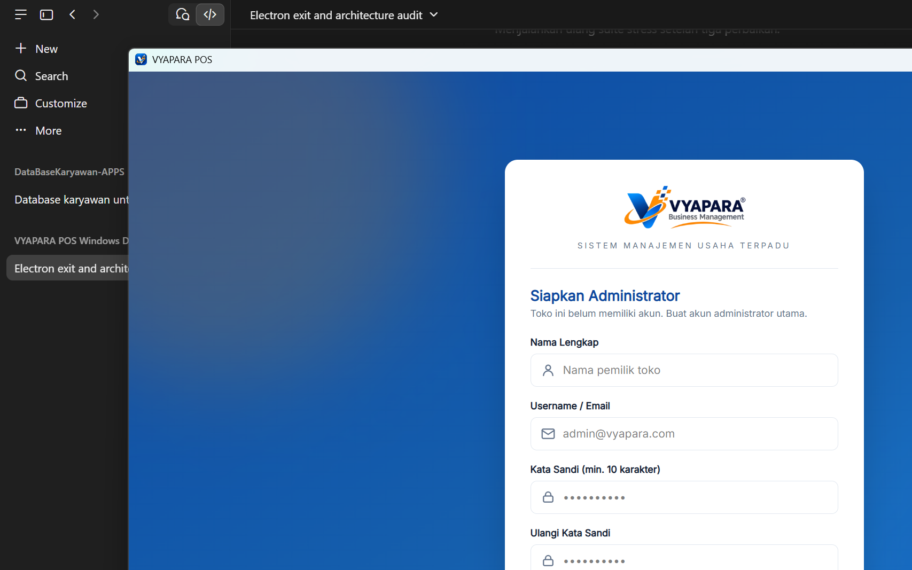
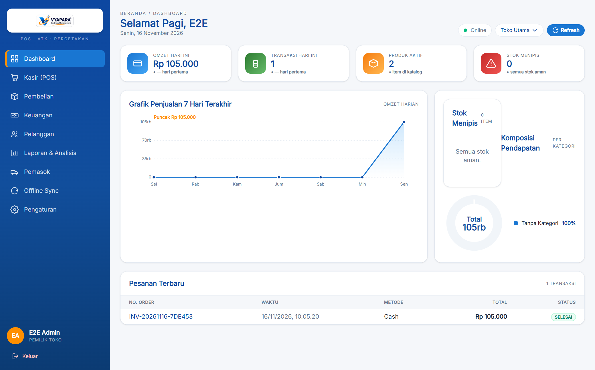

VYAPARA Setup 1.0.0.exe ke komputer toko.C:\Program Files\VYAPARA), klik Install, lalu Finish. Pintasan VYAPARA dibuat di desktop dan Start Menu.Pada saat pertama kali dijalankan, aplikasi belum memiliki administrator sama sekali — layar “Siapkan Administrator” muncul dan tidak bisa ditutup selama belum ada admin.
admin123 otomatis: akun tersebut diwajibkan ganti kata sandi pada login berikutnya). Simpan kata sandi Anda di tempat aman.
Layar “Siapkan Administrator” — tampil hanya pada fresh install (belum ada pengguna).
| Lokasi | Isi |
|---|---|
%APPDATA%\vyapara-desktop\ | Folder utama data aplikasi (userData) |
%APPDATA%\vyapara-desktop\database\vyapara.db | Database SQLite utama (WAL mode) |
%APPDATA%\vyapara-desktop\database\vyapara.db-wal / -shm | File WAL (sementara, dibuat otomatis oleh SQLite, aman dihapus hanya saat aplikasi tertutup) |
%APPDATA%\vyapara-desktop\session.token | Token sesi login (mode 0600; dihapus saat logout/kadaluarsa) |
%APPDATA%\vyapara-desktop\device-identity.json | Identitas perangkat untuk sinkronisasi |
%APPDATA%\vyapara-desktop\sync-credentials.bin | Kredensial sinkronisasi terenkripsi DPAPI (Windows) |
%APPDATA%\vyapara-desktop\backups\ | Folder cadangan (dibuat saat Backup dari Pengaturan) |
VYAPARA menerapkan Role-Based Access Control (RBAC) di level aplikasi — bukan sekadar menyembunyikan tombol. Setiap panggilan sensitif divalidasi di main process dengan token sesi.
| Modul / Tindakan | Admin | Kasir | Viewer |
|---|---|---|---|
| Dashboard (baca) | ✅ | ✅ | ✅ |
| POS / transaksi | ✅ | ✅ | 👁 (baca) |
| Keuangan (dompet kas, laporan keuangan) | ✅ | ❌ | 👁 (baca) |
| Pelanggan — baca / tambah / edit | ✅ | ✅ | 👁 |
| Pemasok — baca / tambah / edit | ✅ | ✅ | 👁 |
| Pembelian (PO, terima barang, retur beli) | ✅ | ❌ | 👁 |
| Inventory (opname, penyesuaian) | ✅ | 👁 | 👁 |
| Laporan & analisis | ✅ | ✅ | ✅ |
| Pengaturan toko & backup/restore DB | ✅ | ❌ | 👁 (baca) |
| Kelola pengguna / peran / izin | ✅ | ❌ | ❌ |
| Offline Sync (baca / picu) | ✅ | ✅ | ✅ |
admin@vyapara.com/admin123 dipaksa ganti kata sandi (jika masih ada di database lama)timingSafeEqualDashboard adalah halaman utama setelah login. Menampilkan kondisi toko hari ini secara ringkas.

Dashboard dengan data transaksi nyata: omzet hari ini Rp 105.000, transaksi tercatat, pesanan terbaru “INV-20261115-DB1173”, grafik 7 hari terakhir, komposisi pendapatan.
completed hari ini. Panah hijau/merah dihitung otomatis vs kemarin.Grafik garis dengan area gradasi menampilkan omzet per hari selama 7 hari terakhir (dihitung dari transaksi completed). Puncak ditandai oranye (“Puncak …”). Data berasal dari database lokal — tidak perlu server.
Donut chart membagi omzet berdasarkan kategori produk yang terjual (masing-masing irisan = persentase dari total). Kategori ditentukan dari products.category_id → tabel categories. Produk tanpa kategori masuk “Tanpa Kategori”. Jika belum ada transaksi, panel menampilkan keadaan kosong (“Belum ada transaksi.”).
Tabel 5 transaksi terakhir dengan kolom: No. Order (INV-…) | Waktu | Metode | Total | Status (Selesai). Klik tombol Refresh di kanan atas untuk muat ulang data kapan pun.
Daftar maksimal 5 produk yang stoknya menyentuh/di bawah minimum, dengan badge stok saat ini. Klik Lihat Semua Stok → untuk mengelola inventaris (halaman penyesuaian stok tersedia untuk inventory secara backend; UI lengkap untuk opname menyusul).